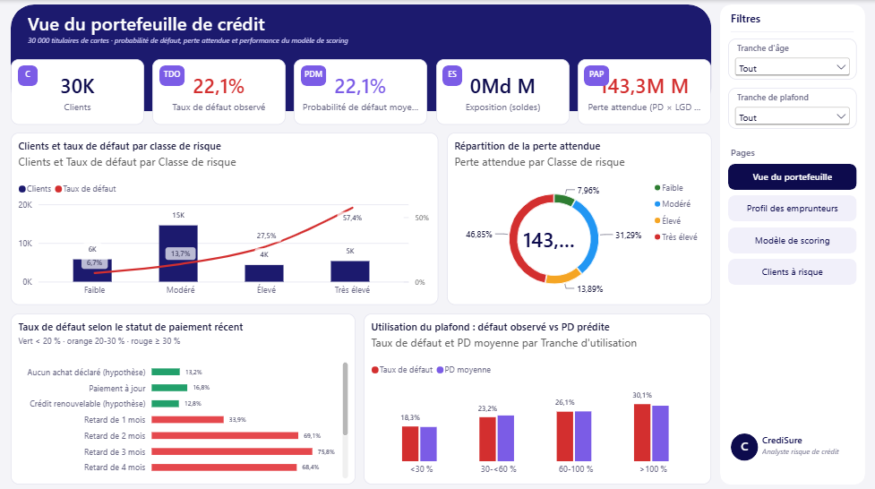

04 / RISQUE DE CRÉDIT

Mesurer le risque.
Agir plus tôt.
Quels clients feront défaut le mois suivant, et où se concentre la perte attendue ?
4 PAGES32 MESURES DAXPBIP22,12 % DE DÉFAUTAUC 0,754
Je transforme des données publiques et métier en tableaux de bord Power BI et en analyses reproductibles qui éclairent une décision : budget, risque de crédit, fraude, marges, marketing.
Le visuel est la dernière couche, pas le point de départ. Chaque étude déclare sa source et son grain, documente les contrôles et la logique du modèle, puis relie le dashboard à une recommandation chiffrée.
Profiler le sujet, le grain, les clés, la période et les limites.
Corriger la qualité, conserver des totaux de contrôle.
Relations en étoile, mesures, comparaisons, filtres.
Des pages pensées autour des questions de gestion.
Relier la preuve chiffrée à l'action et aux limites.
Comparez neuf questions de gestion, parcourez 40 pages de rapport et inspectez les fichiers PBIP, le modèle et la documentation de chaque projet.
Explorer les dashboards →
Quels clients feront défaut le mois suivant, et où se concentre la perte attendue ?
Indépendant · missions à distance
Nettoyage et structuration de données, analyses et tableaux de bord Power BI et Excel livrés à des clients, avec restitution des indicateurs clés.
Programmes Forage · BCG X, Deloitte, Citi, JPMorgan Chase, British Airways, Commonwealth Bank
Nettoyage et analyse de jeux de données complexes, dashboards Power BI de suivi des KPI commerciaux, analyse du comportement d'achat et de la performance des campagnes, restitution aux parties prenantes.
PIGIER Bénin · Abomey-Calavi
Bases de données, systèmes et sécurité ; spécialisation personnelle en analyse de données et BI.
CEG Pahou
Langues : français (langue maternelle, niveau professionnel) · anglais (niveau intermédiaire).